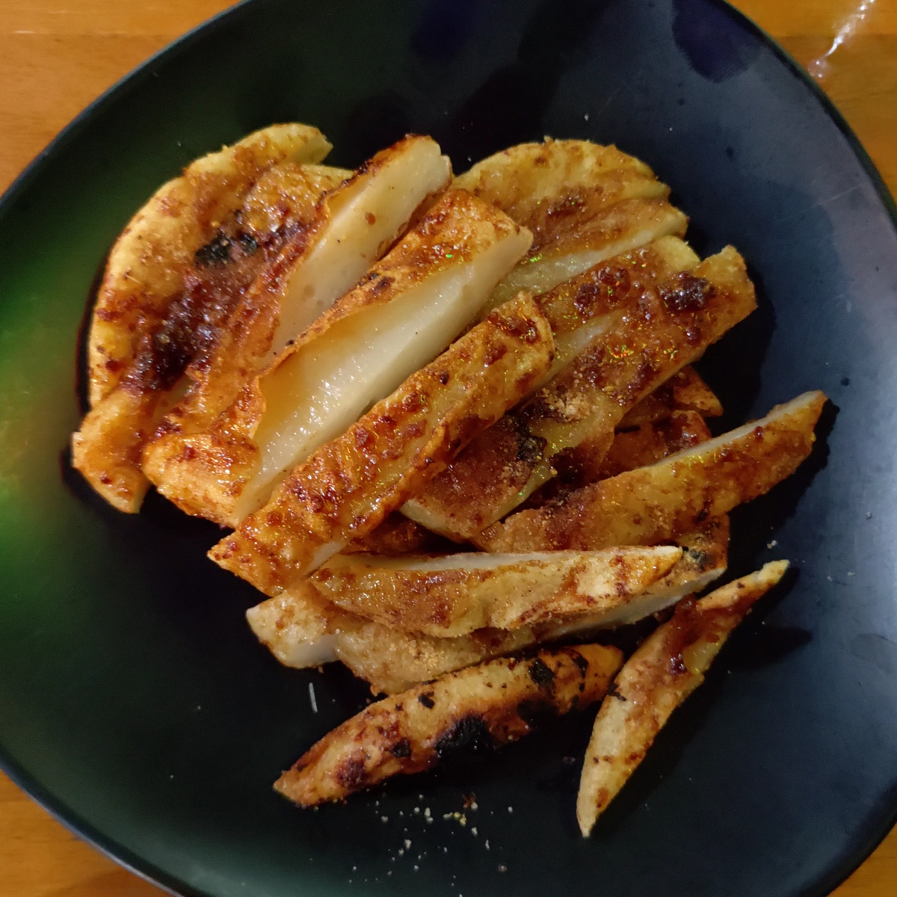
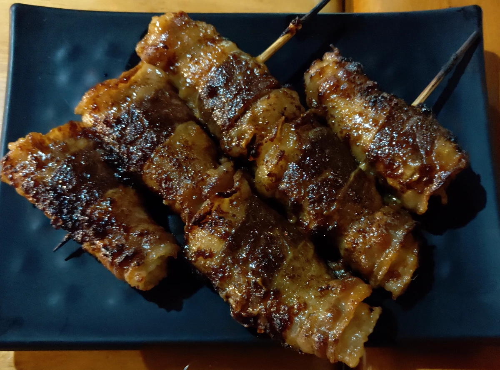
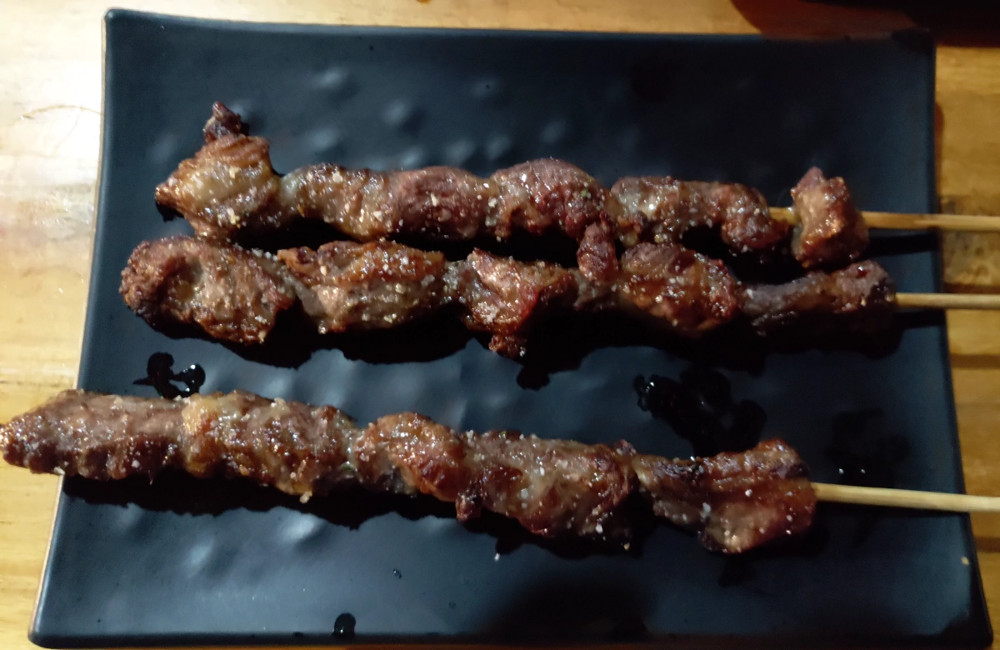

[竹北] 瘋燒熱血貨櫃燒烤-crazy roast
| 餐廳名稱: | 瘋燒熱血貨櫃燒烤-crazy roast |
|---|---|
| 地 址: | 新竹縣竹北市環北路一段71巷2-20號 |
| 營業時間: | 週一 ~ 周六 18:00 ~ 00:00 |
| 週日 公休 | |
| 電 話: | 0963928876 |
因為金牙豬吵著吃燒烤，評估了一家Google頗高分的燒烤，第一次印象不錯，所以很快地來吃第二次， 所以將兩次的食物照片 一起紀錄於此。
瘋燒熱血貨櫃燒烤 有放一兩個貨櫃，然後在貨櫃外的空地再多放一些桌椅，場地略簡陋， 但省下很多裝潢費，冷氣費，回饋給客人。這裡的戶外是有搭棚子，不怕下雨的。 如果飄雨，門口的塑膠布會放下來，免得雨會飄進來。 這邊是台元科技園區外圍稍微荒涼一點的地方，雖然鄰近高級住宅大廈，但高級大廈住戶通常有買大廈車位， 不會將車停外面，所以來這裡用餐很好停車。
廚房在照片左邊，右邊就是我說的搭棚子的戶外，椅子都是用台灣啤酒的箱子改裝的，長腿的坐了會覺得不舒服。 感覺是到處收集一些家具來改，蠻克難的。
菜單如下，如我前面所說，老闆不重裝潢，回饋客戶。網路上是有一些評論說單價高，但其實這裡幾乎每道菜份量都大， 那個單價真的不會很高。 整體來說，燒烤為了讓你喝飲料，調味都是重口味，都蠻好吃的。我們有拿了飲料，好像也沒貴多少， 蠻佛心的。
炒泡麵，炒得蠻好吃的，所以兩次用餐都有點。重口味，可惜沒有另外加肉絲一起炒，不然應該會更好。
明太子雞肉串，也是兩次用餐都有點。這個經典配方似乎蠻多燒烤店都有，這裡也一樣好吃。
下圖 上方是 剝皮辣椒牛，下方是 三星蔥燒豬，味道很類似，烤肉醬味道壓過剝皮辣椒與三星蔥，我甚至連牛肉豬肉都分不出來了。總之，感覺就是 就是調味的不錯的肉，在口中咀嚼，同時嚼到一些青菜。
孜然羊肉串，總算烤肉醬味道弱一些，孜然味道明顯，羊肉的腥羶也許被孜然壓掉了，不會覺得羊肉有腥味。
糯米大腸，烤得也不錯，皮烤到脆，中間的米飯散發油蔥與鹹味。
這個甜不辣真是嫩，所以兩次用餐都有點。外表幾個點焦脆，中間厚實的甜不辣軟軟的，烤肉醬也讓全部外表都有味道，蠻不錯的。 
薯霸牛五花，大概是牛肉包薯條吧，一樣因為烤肉醬濃，只知道中間軟軟的，外面是肉，感覺不到是什麼。 
烤鮮蚵，有附醬油，但其實不需要。 鮮蚵不用調味，烤一烤味道就很濃郁了，試了一顆沾醬油的蚵，不覺得味道有提升。 應該要附個鐵湯匙，讓我們把蚵的類似干貝的那個小柱也拆下來吃。

蒜鹽牛肉串，蒜味不明顯，一樣是烤肉醬的味道。 
旗津黑輪片，其實就是烤甜不辣同樣的方式烤旗津黑輪片，黑輪片比較薄，感覺口感比甜不辣差一些，不過這是個人偏好啦，如果有人本來就愛吃烤黑輪，應該會愛這道菜。
醬燒五花肉串，豬五花刷烤肉醬烤，雖然說烤豬肉有時是淋點檸檬汁會更好吃，但是覺得烤鮮蚵應該更需要吧。
瘋燒熱血貨櫃燒烤 第一次三個人吃下來八百多，打包一堆。第二次因為點了烤鮮蚵，花了一千兩百多，仍然打包很多。應該是不至於被嫌貴吧。 裝潢簡陋到是還好，我的觀念是東西好吃就好，不管裝潢的，而且東西確實好吃。 比較討厭的是有人抽菸，第一次客人少，剛好沒人抽菸，吃得很開心。第二次去，兩桌客人輪流抽菸，雖然電風扇有開，通風良好，距離大約5公尺以上， 煙味還是會飄過來。法律其實已經規定餐廳內不能抽菸了，不曉得這種搭棚子的戶外，但是緊鄰牆壁切開的貨櫃室內，還能算是室外嗎? 而且燒烤類的上菜都慢，吃一頓飯下來會花很久時間，動不動就被淡菸味燻，想趕快吃完趕快走都不行。 撇掉客人抽菸的這個小插曲外，還是蠻推薦 瘋燒熱血貨櫃燒烤-crazy roast的。